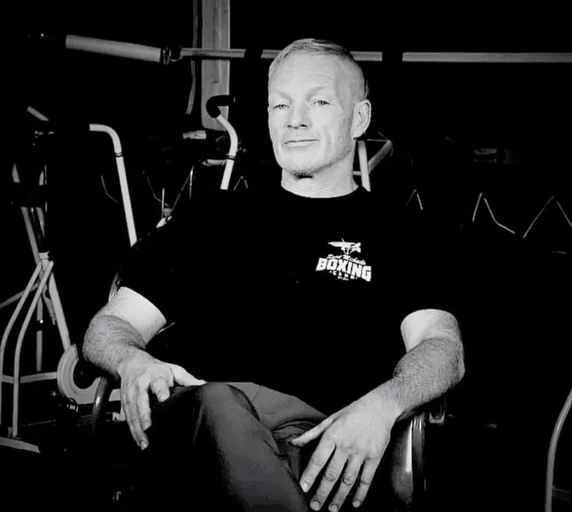

Named After A Protector.
Built By One.
Saint Michaels Coffee wasn't reverse-engineered from a marketing plan. It's one family, one name, and one life spent serving — in the order it actually happened.
Then I heard the voice of the Lord saying, “Whom shall I send? And who will go for us?” And I said, “Here I am. Send me.”Isaiah 6:8

Michael James Englert
U.S. Army Special Forces veteran. Police Sergeant with more than two decades on the job. Amateur and professional boxer. Trainer, cornerman, and founder of Saint Michaels Boxing Club.
Different uniforms, one thread running through all of them: he goes first, and he brings people with him.
The Woman Who Raised His Father
Michael's father was raised at Saint Joseph's Villa in Rochester, New York. What he found there was Sister Mary Elaine — not only a mentor, but the closest thing to a mother that place could give a boy. She looked after him, and the mark she left never faded.
Her Saint
Saint Michael the Archangel was hers. The protector — the one who stands between good and everything that threatens it. A boy who had nobody standing between him and the world learned that name from the one person who did.
A Son Named In Her Honor
Years later, with a son of his own, he named him Michael. Not after himself — after her saint, so the woman who raised him would be carried by someone for the rest of his life. That son is our founder.
A Lifetime Of Service
Michael's life followed that name in ways nobody planned. He served in the United States Army, including Special Forces. He became a police officer and rose to Sergeant, spending decades protecting his community. Alongside all of it he built a second life in boxing — first as a fighter, then as a trainer.
Saint Michaels Boxing Club
That mentoring turned into something bigger: a nonprofit boxing club built to give young people discipline, structure, and someone in their corner — the same things Sister Mary Elaine once gave his father.
Coffee, The Whole Way Through
Across every one of those worlds — deployments, police shifts, firehouses, boxing gyms, kitchen tables — the same thing kept showing up. Coffee before the mission. Coffee through the long shift. Coffee at the gym. Coffee when people finally sat down together.
And Eventually, Coffee With A Purpose
That's what became Saint Michaels Coffee: a way to carry where he came from and what he's done into something that keeps helping people — one bag at a time.
Protect what matters. Serve others.
Leave things better than you found them.
Great Coffee. Greater Purpose.
A portion of every purchase funds the Saint Michaels Foundation, put to work by the officers and firefighters who find the need first.
Shop Our Coffee